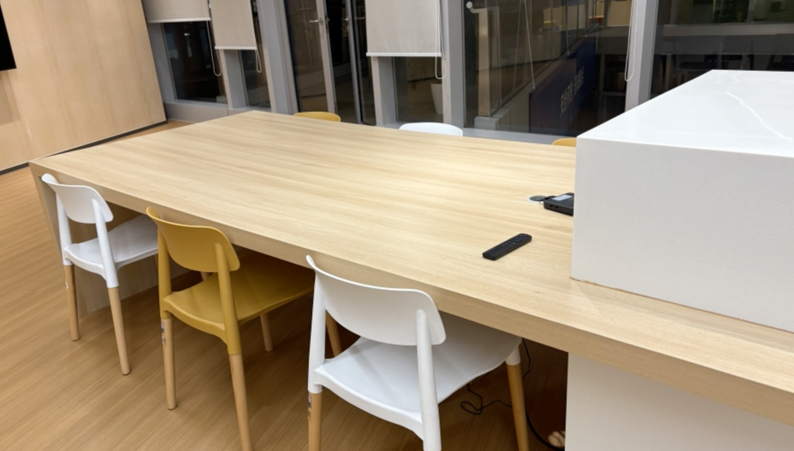
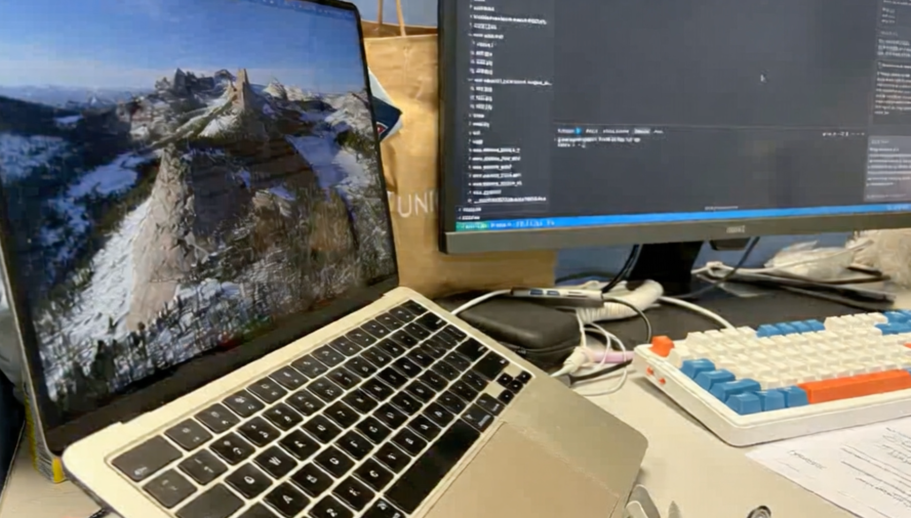
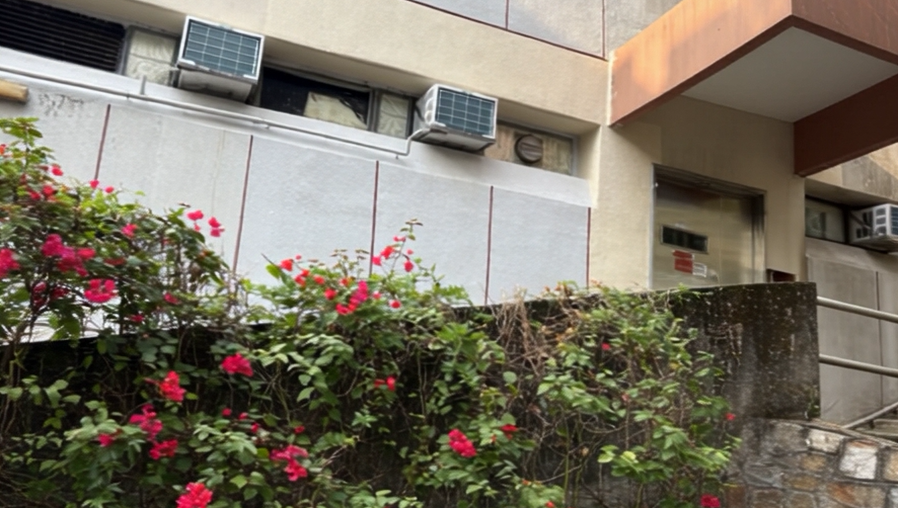
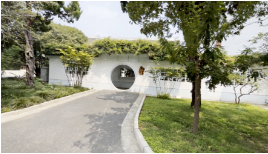
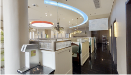
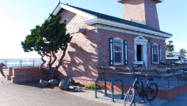
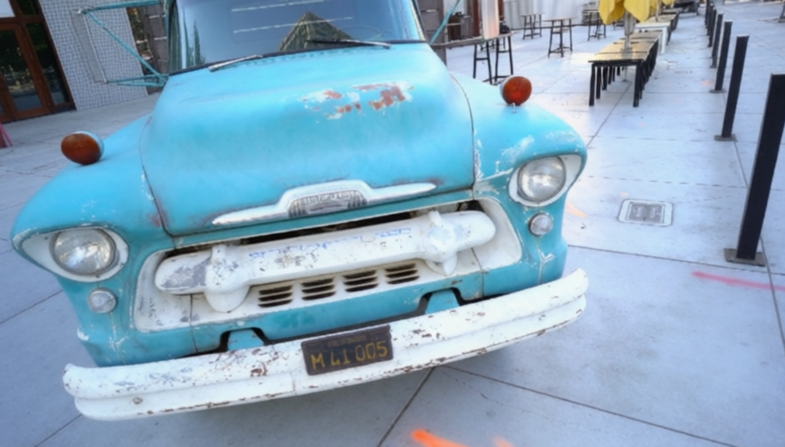

AnyRecon enables high-quality and large-scale 3D reconstruction from sparse inputs, supporting long trajectories with over 200 frames.
AnyRecon enables high-quality and large-scale 3D reconstruction from sparse inputs, supporting long trajectories with over 200 frames.
Sparse-view 3D reconstruction is essential for modeling scenes from casual captures, but remain challenging for non-generative reconstruction. Existing diffusion-based approaches mitigates this issues by synthesizing novel views, but they often condition on only one or two capture frames, which restricts geometric consistency and limits scalability to large or diverse scenes. We propose AnyRecon, a scalable framework for reconstruction from arbitrary and unordered sparse inputs that preserves explicit geometric control while supporting flexible conditioning cardinality. To support long-range conditioning, our method constructs a persistent global scene memory via a prepended capture view cache, and removes temporal compression to maintain frame-level correspondence under large viewpoint changes. Beyond better generative model, we also find that the interplay between generation and reconstruction is crucial for large-scale 3D scenes. Thus, we introduce a geometry-aware conditioning strategy that couples generation and reconstruction through an explicit 3D geometric memory and geometry-driven capture-view retrieval. To ensure efficiency, we combine 4-step diffusion distillation with context-window sparse attention to reduce quadratic complexity. Extensive experiments demonstrate robust and scalable reconstruction across irregular inputs, large viewpoint gaps, and long trajectories.



Our framework operates through a continuous generation-reconstruction loop: 1) It begins by establishing an initial 3D geometry memory from a collection of captured views and performs Geometry-Driven View Selection to identify key reference frames. 2) These frames, along with rendered point clouds, guide an Unordered Contextual Video Diffusion model to synthesize consistent novel views, which are then integrated via a 3) 3D Geometry Memory Update to refine the global scene representation for subsequent iterations.




@article{chen2026anyrecon,
title={AnyRecon: Arbitrary-View 3D Reconstruction with Video Diffusion Model},
author={Chen, Yutian and Guo, Shi and Jin, Renbiao and Yang, Tianshuo and Cai, Xin and Luo, Yawen and Yang, Mingxin and Yu, Mulin and Xu, Linning and Xue, Tianfan},
journal={arXiv preprint arXiv:2604.19747},
year={2026}
}